Galeria dos Clássicos: Jogos que Marcaram Consoles e Eras
Clássicos e Fundadores da Era 2D
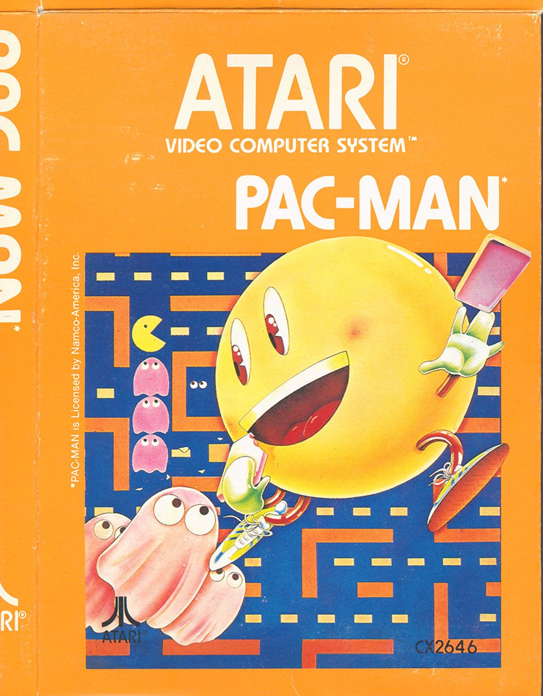
Pac-Man
Ano de Lançamento: 1980 (Arcade) / 1982 (Atari 2600)
Plataformas: Atari 2600, Arcades, NES, Game Boy e plataformas modernas.
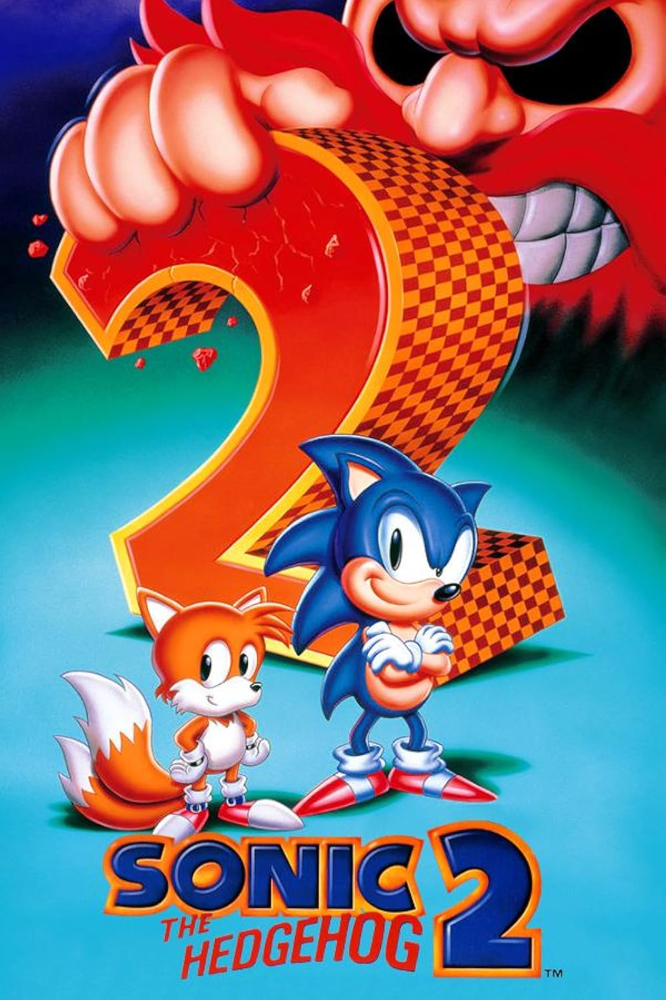
Sonic the Hedgehog 2
Ano de Lançamento: 1992
Plataformas: SEGA Mega Drive, Master System, Game Gear, iOS, Android e coletâneas em consoles modernos.
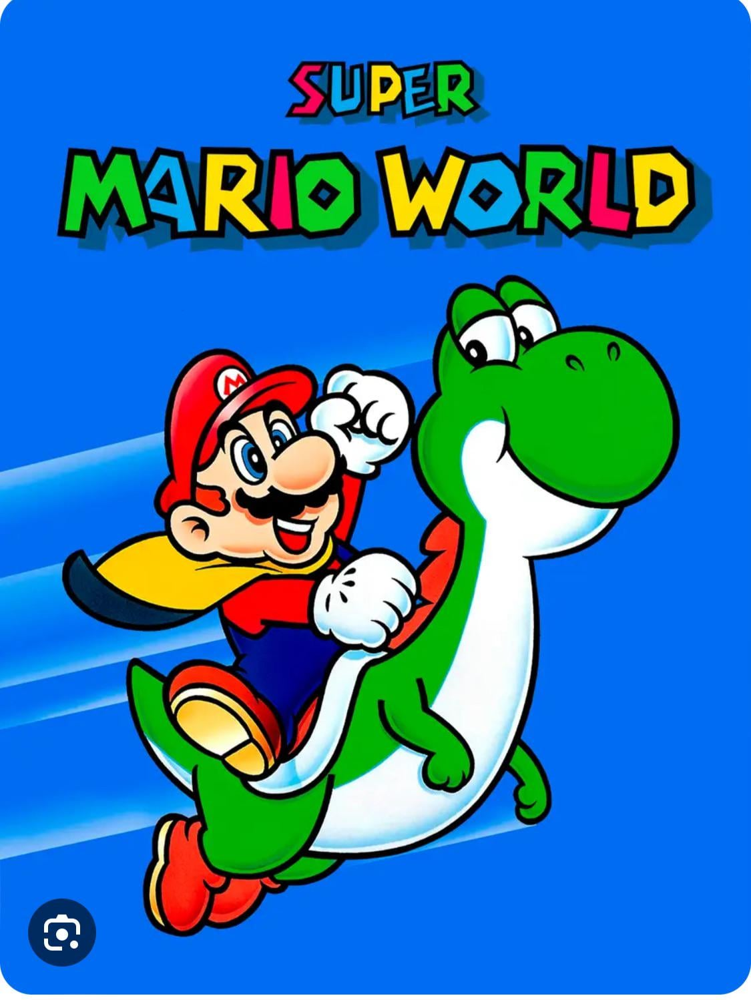
Super Mario World
Ano de Lançamento: 1990 (Japão)
Plataformas: Super Nintendo, Game Boy Advance, Virtual Console e Nintendo Switch Online.
Revolucionários da Era 3D
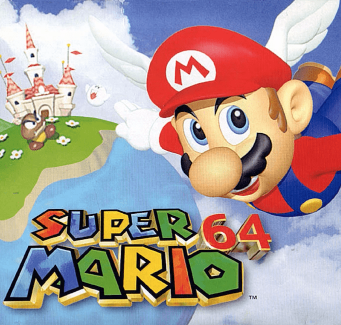
Super Mario 64
Ano de Lançamento: 1996
Plataformas: Nintendo 64, Nintendo DS, Virtual Console e Nintendo Switch.
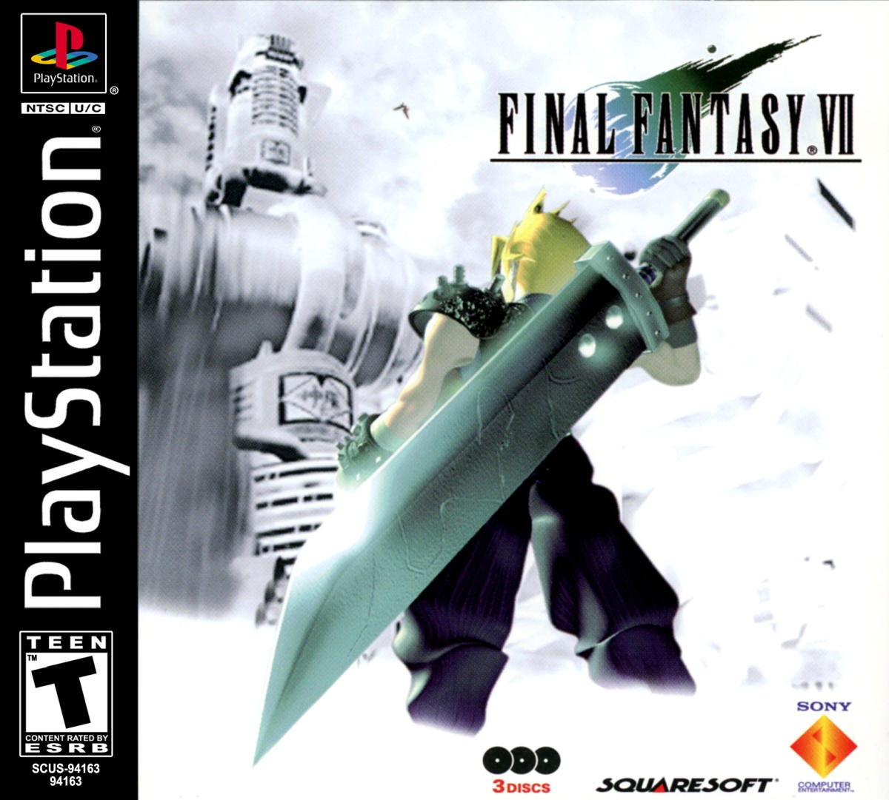
Final Fantasy VII
Ano de Lançamento: 1997
Plataformas: PlayStation 1, PC, PS4, Xbox One, Nintendo Switch, iOS e Android.
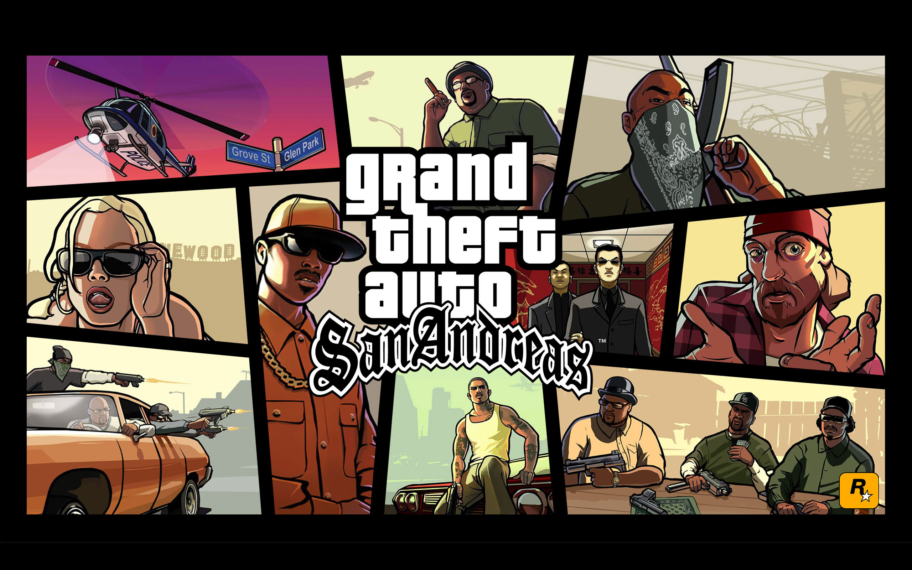
Grand Theft Auto: San Andreas
Ano de Lançamento: 2004
Plataformas: PlayStation 2, Xbox, PC, Xbox 360, PS3, PS4, PS5, Xbox Series X/S, iOS e Android.
Gigantes da Era HD e Online
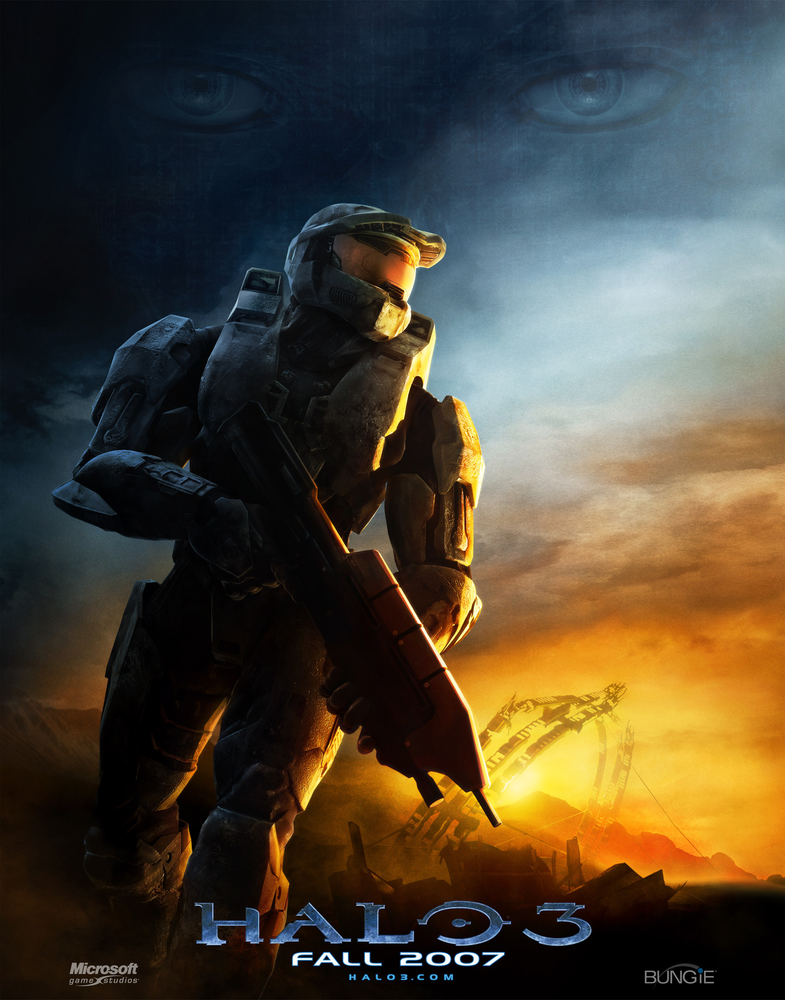
Halo 3
Ano de Lançamento: 2007
Plataformas: Xbox 360, Xbox One, Xbox Series X/S e PC (Master Chief Collection).

Grand Theft Auto V (GTA V)
Ano de Lançamento: 2013
Plataformas: PS3, Xbox 360, PS4, Xbox One, PS5, Xbox Series X/S e PC.
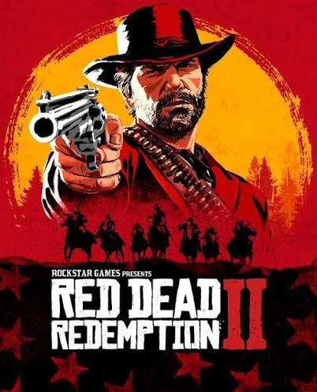
Red Dead Redemption 2
Ano de Lançamento: 2018
Plataformas: PlayStation 4, Xbox One e PC.
Obras-Primas da Era Atual (4K, SSDs e Híbridos)
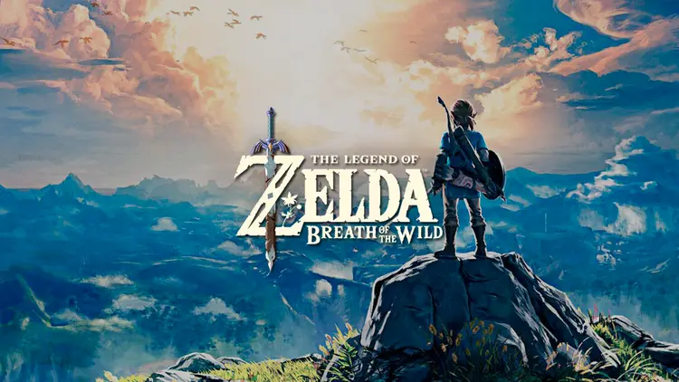
The Legend of Zelda: Breath of the Wild
Ano de Lançamento: 2017
Plataformas: Nintendo Switch e Nintendo Wii U.
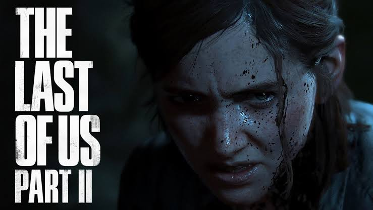
The Last of Us Part II
Ano de Lançamento: 2020
Plataformas: PlayStation 4 e PlayStation 5.
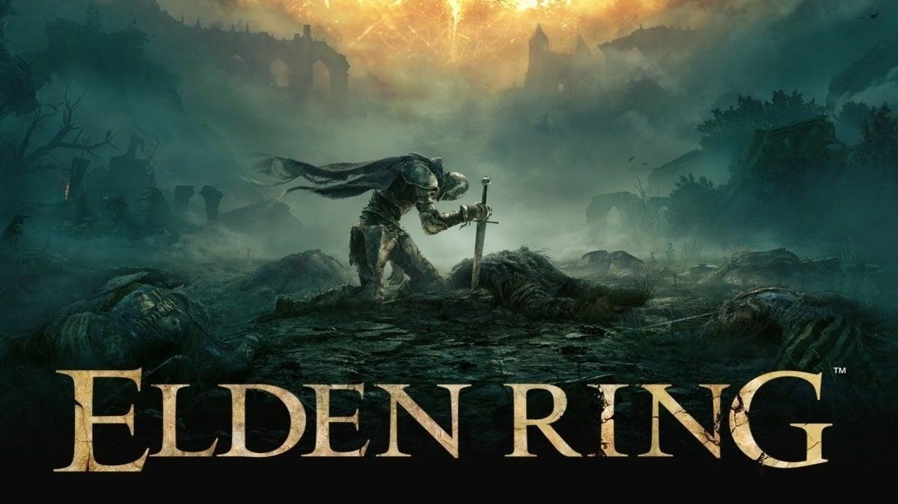
Elden Ring
Ano de Lançamento: 2022
Plataformas: PS5, PS4, Xbox Series X/S, Xbox One e PC.
Bem-Vindos ao Amanhã: Leonida, Vice City e a Nova Era
O título que fecha este acervo e promete ditar as regras do entretenimento digital para os próximos anos.
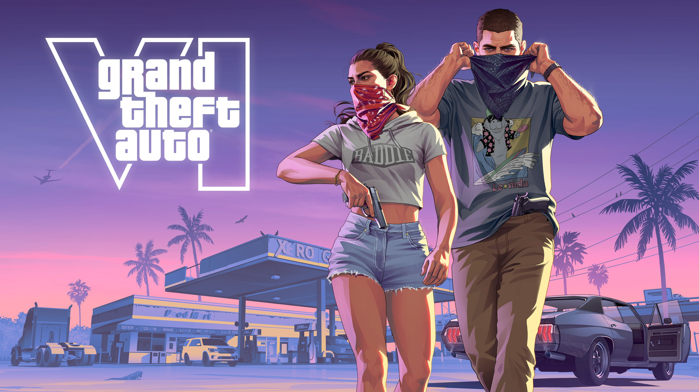
Data de Lançamento: 19 de Novembro de 2026
Plataformas: PlayStation 5 e Xbox Series X/S (com lançamento posterior esperado para PC).